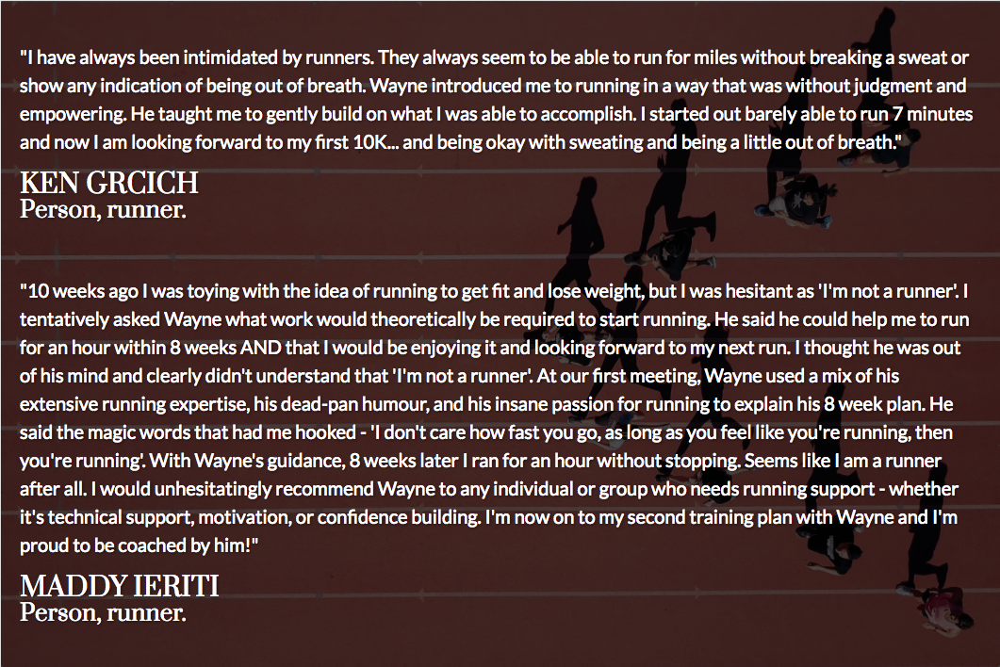
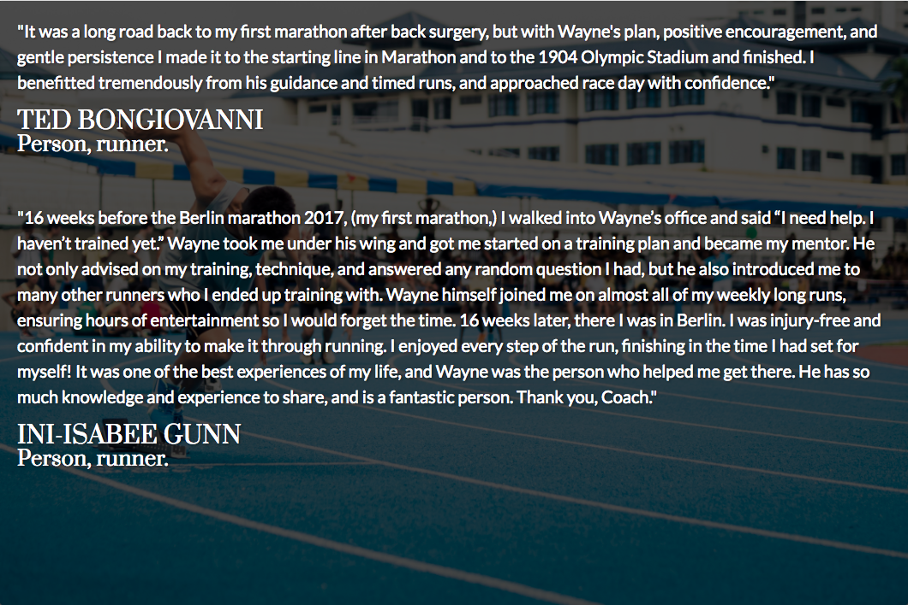

Making running easy for beginners and veterans for over 30 years


"I grew up with my dad setting the example that if you run, your life is simply better. He always told me I had the genetics for it, but I never found the passion for it until last year. I decided to sign up for a half marathon. I ran cross country and track in high school and middle school respectively, but I was a terrible runner! With my dad's personalized 16-week training program, I went from running middle distances at an 11-minute pace to being able to run 10 miles at a 9:30 pace. And I'm still getting faster! I was one of those people who couldn't understand why folks like my dad would wake up at 7am on a Sunday to run. But now I get it, because I'm one of those people. I completely fell in love with running with my dad's start small and doable coaching plan. Throughout training I never felt like I wouldn't be able to complete my half marathon. Finishing my race has been my biggest physical accomplishment to date. And my dad was right - my life is better now that running is a part of it."